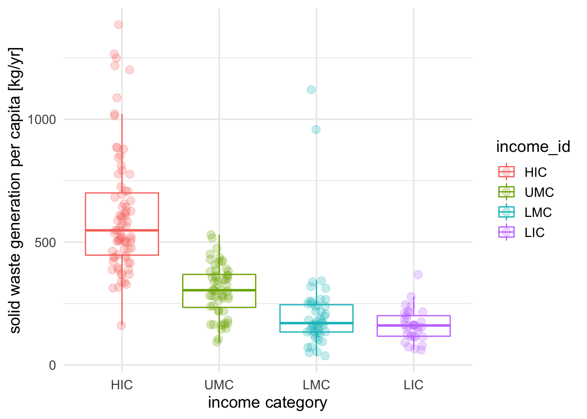

library(readr)
library(dplyr)
library(ggplot2)Pair Programming - Data Science Lifecycle
Pair Programming
In pair programming exercises learners work in pairs to solve exercises together.
Task 0: Load R packages
R Packages are typically loaded at the beginning of the document.
Task 1: Data import
- Create a new code-chunk below.
- Import the CSV file titled ‘country_level_data_0.csv’ and contained in the ‘raw_data’ directory with help of:
- the
read_csv()function - the assignment operator (<-) to assign the data to an object named
global_waste_data.
- Render: Render this file to HTML
- Add: Open the Git pane and add all files to the staging area (Tip: Tick off all checkboxes under column ‘Staged’)
- Commit: Commit pending changes, add a meaningful commit message
- Push: Push changes to the remote repository (i.e. GitHub)
global_waste_data <- read_csv("data/raw_data/country_level_data_0.csv")Task 2: Data tidying (and some transformation)
- Create a new code-chunk below.
- Start with the
global_waste_dataobject - Add the pipe operator (%>%) and on a new line use the
select()function. - Inside the parantheses write the names of the following variables:
- country_name
- iso3c
- income_id
- total_msw_total_msw_generated_tons_year
- population_population_number_of_people
- Add the pipe operator (%>%) and on a new line use the
rename()function. - Rename two variables:
- from ‘total_msw_total_msw_generated_tons_year’ to ‘msw_tons_year’
- from ‘population_population_number_of_people’ to ‘population’
- Use the assignment operator (<-) to assign the data to an object named
global_waste_data_small. - Run the code contained in the code-chunk.
- Render, Add, Commit, Push
global_waste_data_small <- global_waste_data %>%
select(country_name,
iso3c,
income_id,
total_msw_total_msw_generated_tons_year,
population_population_number_of_people) %>%
rename(msw_tons_year = total_msw_total_msw_generated_tons_year,
population = population_population_number_of_people) Task 3: Data transformation
- Create a new code-chunk below.
- Start with the
global_waste_data_smallobject. - Add the pipe operator (%>%) and on a new line use the
mutate()function. - Create a new variable named ‘capita_kg_year’ by dividing ‘msw_tons_year’ by ‘population’ and multiplied with ____?
global_waste_data_kg_year <- global_waste_data_small %>%
mutate(capita_kg_year = msw_tons_year / population * 1000) %>%
mutate(income_id = factor(income_id,
levels = c("HIC", "UMC", "LMC", "LIC")))Task 4: Data visualisation
- Fill in the blanks in the code-chunk below.
- Run the code that is contained in the code-chunk.
- Render the file. Why does the plot not show up?
ggplot(data = global_waste_data_kg_year,
mapping = aes(x = income_id,
y = capita_kg_year,
color = income_id)) +
geom_boxplot(outlier.shape = NA) +
geom_jitter(position = position_jitter(width = 0.1, height = 0),
alpha = 1/4, size = 3) +
labs(x = "income category",
y = "solid waste generation per capita [kg/yr]") +
theme_minimal(base_size = 14)